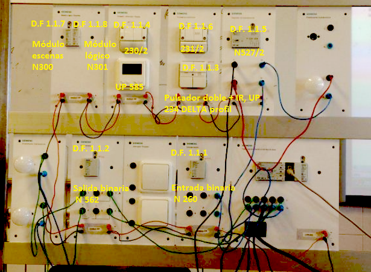

PANEL SIEMENS
Crea un proyecto con ETS3 de con los aparatos y direcciones
fisicas indicadas en el panel, con los programas de
aplicación indicados en la tabla inferior, y que funcione según
lo indicado.

EJERCICIO 1:
Controla la iluminacion desde los pulsadores KNX y desde el movil.
EJERCICIO 2:
FUNCIONAMIENTO:
* Pulsador 1.1.3: es
un pulsador doble con IR modelo UP 234 DELTA profil
* Con la tecla
derecha encendemos, apagamos y regulamos la bombilla superior
* Con la tecla
izquierda encendemos y apagamos las 2 bombillas inferiores
Pulsador 1.1.4: es un pulsador 230/2 DELTA profil / style
* Con la tecla
derecha encendemos y
apagamos la bombilla superior de la parte de abajo
* Con la tecla
izquierda encendemos y
apagamos la bombilla inferior de la parte de abajo
Pulsador 1.1.6: es un regulador de temperatura con pulsadores modelo UP
231/2 DELTA profil
* Con las teclas de
arriba encendemos todas las bombillas
* Con las teclas de
abajo apagamos todas las bombillas
APARATOS: DESIGNACIÓN, CARACTERÍSTICAS.
NOMBRE Entrada binaria N260
PRODUCTO 5WG1 260-1AB01
APLICACION 11 S4 Binario-Valor 240A01
DIRECCION FISICA 1.1.1
DIRECCIONES DE GRUPO
NOMBRE Salida binaria N562
PRODUCTO 5WG1 562-1AB01
APLICACION 11 A2 Binario 520B01
DIRECCION FISICA 1.1.2
FABRICANTE Siemens
DIRECCIONES DE GRUPO Canal A : 1/1/2, 1/1/3, 1/1/4, 1/1/5, 1/1/6
Canal B: 1//2, 1/1/3, 1/1/5, 1/1/6, 1/1/7
NOMBRE Pulsador doble + IR,UP 234 DELTA
PRODUCTO 5WG1 234-2AB11
APLICACION 20 S18 Pulsador UP + IR 900B02
DIRECCION FISICA 1.1.3
FABRICANTE Siemens
DIRECCIONES DE GRUPO Canal A arriba: 1/1/2
Canal A abajo : 1/1/3
On / Off : 1/1/1, 1/1/3
Regulador: 1 / 2/1
NOMBRE Pulsador UP 230/2 DELTA PROFIN
PRODUCTO 5WG1 230-2AB12
APLICACION 12 S8 Pulsador múltiple + Detector movim. 280103
DIRECCION FISICA 1.1.4
FABRICANTE Siemens
DIRECCIONES DE GRUPO 2 Conmutadores izquierdos(On-Off) : 1/1/4
2 Conmutadores derechos (On-Off) : 1/1/7
NOMBRE Universaldimmer N527/02
PRODUCTO 5WG1 527-1AN02
APLICACION 21 A1 Universaldimmer 906701
DIRECCION FISICA 1.1.5
FABRICANTE Siemens
DIRECCIONES DE GRUPO Dimmer E/A: 1/1/1, 1/1/5, 1/1/6
Dimmer Dinblock: 1 /2/1
NOMBRE Regulador de temperatura UP 231/2 DELTA
PRODUCTO 5WG1 231-2AB12
APLICACION 20 S2 Regulador de Temp. Ambiente 900601
DIRECCION FISICA 1.1.6
FABRICANTE Siemens
DIRECCIONES DE GRUPO Tecla principal izquierda: 1/1/5
Tecla principal derecha : 1/1/6
NOMBRE Unidad de mando
PRODUCTO 5WG1 585-2AB11
APLICACION 01 07 Anzeige-/Bedieneinheit 801502
DIRECCION FISICA 1.1.7
FABRICANTE Siemens
DIRECCIONES DE GRUPO
NOMBRE Modulo de escenas N 300
PRODUCTO 5WG1 300-1AB01
APLICACION 12 CO Escenas 740801
DIRECCION FISICA 1.1.8
FABRICANTE Siemens
DIRECCIONES DE GRUPO
NOMBRE Modulo logico N 301
PRODUCTO 5WG1 301-1AB01
APLICACION 12 CO Escenas 740801
DIRECCION FISICA 1.1.9
FABRICANTE Siemens
DIRECCIONES DE GRUPO
FUNCIONAMIENTO:
Con
el pulsador 1.1.3: con su tecla derecha encenderemos y
apagaremos y regularemos la bombilla, enviando las direcciones de grupo
de encendido y apagado 1/1/3 y 1/1/1 y la direccion de grupo de
regulacion sera 1 /2/1.
Con la tecla inzquierda encederemos y apagaremos 2 bombillas inferiores con Canal A arriba: 1/1/2
Canal A abajo : 1/1/3.
Con el pulsador 1.1.4 con la techa derecha enciendo y apago la bombilla abajo superior enviando esta direccion de grupo 1/1/4.
Y con la tecla inzquierda enciendo y apago la bombilla abajo inferior enviando esta direccion de grupo 1/1/7.
Con
el pulsador 1.1.6 con las 4 teclas enciendo y apago las 3 bombillas
enviando esta direccion de grupo Tecla principal derecha : 1/1/6Tecla
principal izquierda: 1/1/5.
{kind=link}
{kind=link}